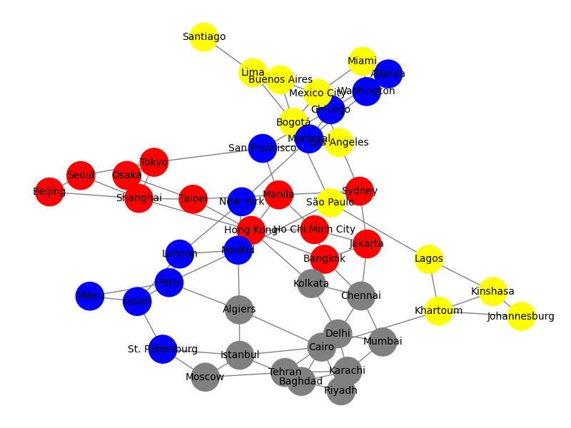

Graphs, Pandemic 2
Previously: Graphs, Pandemic (2026-01-03)
I played around a little in Python and made a graph of the Pandemic game board, complete with all the nodes (cities) and edges (city-to-city paths).
Code: pandemic_graph.py. It's not fancy. It just reads in a .csv file with a list of all cities (and their associated colors) and another .csv file that has the two cities that comprise an edge (path between cities). Then NetworkX builds the graph.
So, I'll put that graph through its paces later to see what I can learn about the gameboard. Wildly unnecessary, I'm just curious. I feel like there's a way to make a game like this that can build a different sized graph (different set of cities, different connections, etc.) if the (theoretical) player wants to. Again, not necessary, but a toy to play with to see how things work. I don't think I'd ever take it that far, but it ought to be possible to simulate different game plays.
Beyond analysis, pictures are worth at least a few words:
Back in the day, I used to be able to make a more interesting graph output using NetworkX—maybe using GraphViz somehow?